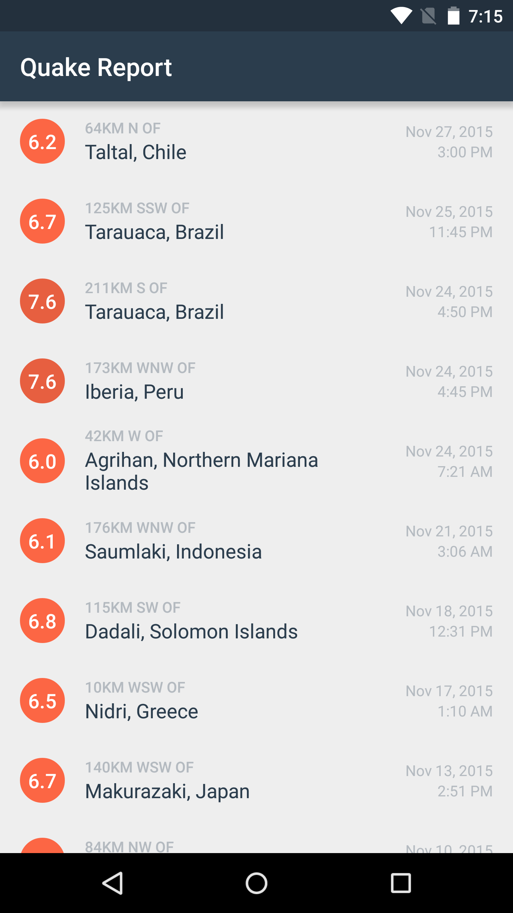

22. Magnitude as a Decimal Value
Magnitude as a Decimal Value
If you’ve seen the magnitude values in the JSON responses from the server, you’ll notice that sometimes they come in the form of one or two decimal places, such as “7.2” or “7.29”. However, according to our design mocks we prefer to display magnitude as a String with one decimal place (i.e. “7.2”), so that the magnitude value can be shown centered within a nice colored circle.

DecimalFormat
Guess what? There’s a class in Android that can help us! It’s called the DecimalFormat class. Just to let you know, there’s also the NumberFormat class that handles formatting all types of numbers, but it’s an abstract class, so DecimalFormat is a concrete class that we can interact with.
To initialize a DecimalFormat object, you pass in a format string matching a defined pattern (similar to the year, month, date symbols for the SimpleDateFormat class). There are special symbols with a specific meaning (i.e. 0 means a placeholder for a digit, # also means a digit but leading zeros are not shown). The full list is shown in a table on the DecimalFormat documentation page.
Here’s an example where we use the https://developer.android.com/reference/java/text/DecimalFormat.html?utm_source=udacity&utm_medium=course&utm_campaign=android_basics#format(java.lang.Object, java.lang.StringBuffer, java.text.FieldPosition)" target="_blank">DecimalFormat format method.
DecimalFormat formatter = new DecimalFormat("0.00");
String output = formatter.format(2.3234);Since we specified the DecimalFormat to show 3 digits (“0.00”), formatting a decimal like 2.3234 will truncate down to two decimal places and output a String value of “2.32”.
You may need to import this class at the top of the file, if it doesn’t automatically import.
import java.text.DecimalFormat;Double data type
You may have noticed that the DecimalFormat format() method takes a double value as input. “Double” is another primitive data type in Java. You can think of it as a decimal value, compared to the “int” data type which is a whole number.
Note: If you want to be more efficient with storing decimal values, you can also use the “float” data type for decimals. The nuances between “float” and double” are in the official Java documentation site here.
Your Turn
In this upcoming quiz, you will store magnitude as a double data type. This starts by extracting the decimal magnitude value as a double when parsing the JSON response.
In QueryUtils extractEarthquakes():
// Extract the value for the key called "mag"
double magnitude = properties.getDouble("mag");This will cause a ripple effect in other parts of the app, and you’ll need to update the Earthquake class, for example, to handle storing a double value for magnitude. Also, in the EarthquakeAdapter, when you try to display the magnitude, use the DecimalFormat class to format the magnitude so only one decimal place is shown. Good luck!
Magnitude as a Decimal Value
SOLUTION:
- In the QueryUtils class, extract magnitude as a double when parsing the JSON response
- In the Earthquake class, store magnitude as a double
- In the EarthquakeAdapter class, use DecimalFormat so that one decimal place is always shown
Magnitude as a Decimal Value - Solution
First you should have modified the way that we parse the magnitude value from the JSON response, so that we have a double value.
In QueryUtils extractEarthquakes():
// Extract the value for the key called "mag"
double magnitude = properties.getDouble("mag");Android Studio will display an error because we can’t pass a double value into the Earthquake constructor, so we need to update the Earthquake class. Inside the Earthquake class:
the magnitude global variable should be a double
the constructor should accept a double value as input
and the magnitude getter method should return a double.
Note that the ellipsis (…) means that we’ve omitted parts of the code so that the code changes are easier to see, but the other parts of the code are still there if you check the full file.
In Earthquake.java:
/** Magnitude of the earthquake */
private double mMagnitude;
…
/**
* Constructs a new {@link Earthquake} object.
*
* @param magnitude is the magnitude (size) of the earthquake
* @param location is the location where the earthquake happened
* @param timeInMilliseconds is the time in milliseconds (from the Epoch) when the
* earthquake happened
*/
public Earthquake(double magnitude, String location, long timeInMilliseconds) {
mMagnitude = magnitude;
mLocation = location;
mTimeInMilliseconds = timeInMilliseconds;
}
…
/**
* Returns the magnitude of the earthquake.
*/
public double getMagnitude() {
return mMagnitude;
}Another advantage to storing the earthquake magnitude as a double is that we can do math calculations easily. For example, if we wanted to find the average magnitude of all the earthquakes, we can easily sum up all the magnitudes and divide by the number of earthquakes. We wouldn’t be able to do math calculations if the magnitude values were text Strings.
In the EarthquakeAdapter, we can format the decimal value into whatever is needed by the UI. In our case, we just want to show one decimal place. We created a helper method called formatMagnitude() that takes a double value as input and returns the formatted string. The helper method initializes a DecimalFormat object instance with the pattern string “0.0”. Then in the getView() method of the adapter, we can read the magnitude value from the current Earthquake object, format the decimal into a string, and then update the TextView to display the value.
In EarthquakeAdapter.java:
import java.text.DecimalFormat;
…
@Override
public View getView(int position, View convertView, ViewGroup parent) {
…
// Find the TextView with view ID magnitude
TextView magnitudeView = (TextView) listItemView.findViewById(R.id.magnitude);
// Format the magnitude to show 1 decimal place
String formattedMagnitude = formatMagnitude(currentEarthquake.getMagnitude());
// Display the magnitude of the current earthquake in that TextView
magnitudeView.setText(formattedMagnitude);
…
}
/**
* Return the formatted magnitude string showing 1 decimal place (i.e. "3.2")
* from a decimal magnitude value.
*/
private String formatMagnitude(double magnitude) {
DecimalFormat magnitudeFormat = new DecimalFormat("0.0");
return magnitudeFormat.format(magnitude);
}The app should look like this when you’re done.